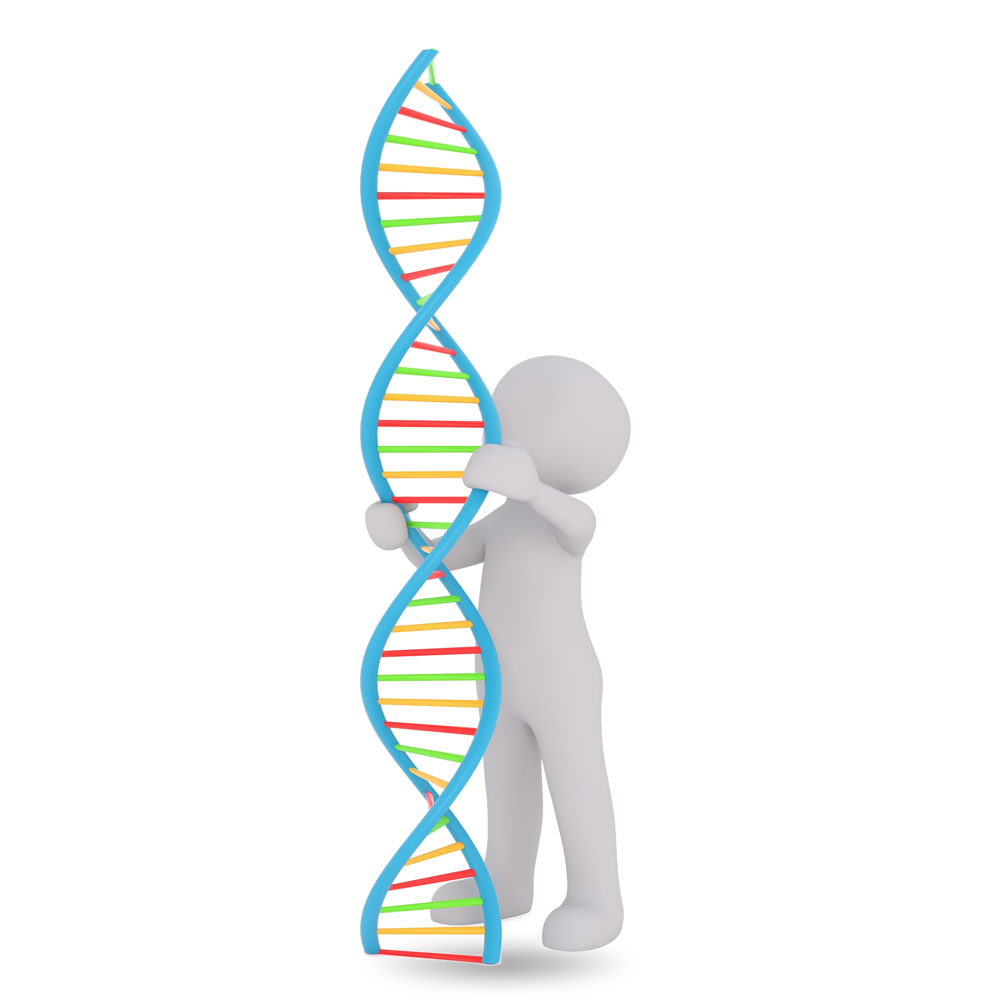

TrueLocus assigns true target genes to non-coding CRISPR hits using sequence models. No cell-type Hi-C required.
TrueLocus
3D Chromatin ArchitectureEnhancer-Promoter Contacts

The Challenge of Non-Coding Targets
CRISPR screens find important non-coding regions, but identifying the exact gene they control is difficult. Simply picking the nearest gene often fails because DNA loops in 3D space. In tested datasets, the correct target was NOT the nearest gene nearly half the time.
Conventional Path
Months of Wasted Effort
Testing the wrong genes based on distance alone wastes months of research and resources.
TrueLocus Engine
Zero Cell-Type Hi-C Required
Uses sequence-derived architecture to identify target genes before in vivo commitment.
Inquiries & Pilot Evaluations
We work directly with target discovery teams.
To evaluate your hits or request benchmark data: